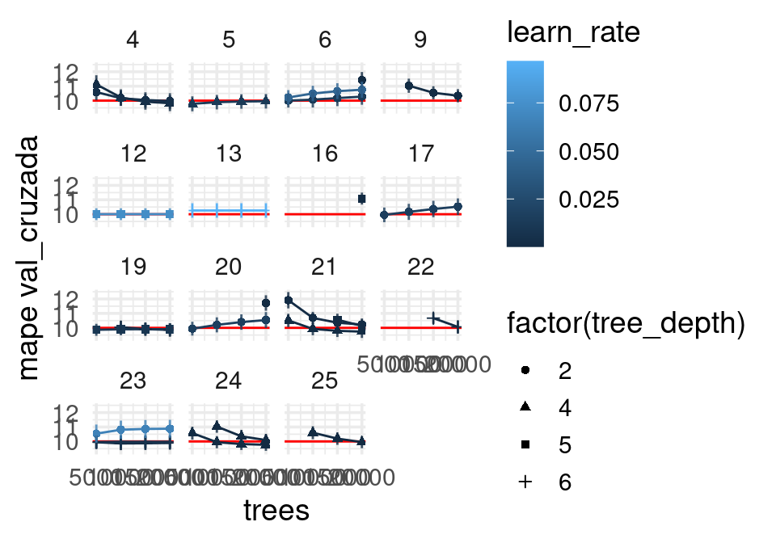

set.seed(227818)
library(rpart)
x <- rnorm(200, 0, 30)
y <- 2*ifelse(x < 0, 0, sqrt(x)) + rnorm(200, 0, 0.5)
dat <- tibble(x = x, y = y)13 Métodos basados en árboles: boosting
Boosting también utiliza la idea de un “ensemble” de árboles. La diferencia grande con bagging y bosques aleatorios en que la sucesión de árboles de boosting se adapta al comportamiento del predictor a lo largo de las iteraciones, haciendo reponderaciones de los datos de entrenamiento para que el algoritmo se concentre en las predicciones más pobres. Boosting típicamente funciona bien con árboles chicos (cada uno con sesgo alto), mientras que bosques aleatorios funciona con árboles grandes (sesgo bajo).
En boosting usamos muchos árboles relativamente chicos adaptados secuencialmente. La disminución del sesgo proviene de usar distintos árboles que se encargan de adaptar el predictor a distintas partes del conjunto de entrenamiento. El control de varianza se logra con tasas de aprendizaje y tamaño de árboles, como veremos más adelante.
En bosques aleatorios usamos muchos árboles grandes, cada uno con una muestra de entrenamiento perturbada (bootstrap). El control de varianza se logra promediando sobre esas muestras bootstrap de entrenamiento.
Igual que bosques aleatorios, boosting es también un método que generalmente tiene alto poder predictivo.
13.1 Forward stagewise additive modeling (FSAM)
Aunque existen versiones de boosting (Adaboost) desde los 90s, una buena manera de entender los algoritmos es mediante un proceso general de modelado por estapas (FSAM).
13.2 Discusión
Consideramos primero un problema de regresión, que queremos atacar con un predictor de la forma \[f(x) = \sum_{k=1}^m \beta_k b_k(x),\] donde los \(b_k\) son árboles. Podemos absorber el coeficiente \(\beta_k\) dentro del árbol \(b_k(x)\), y escribimos
\[f(x) = \sum_{k=1}^m T_k(x),\]
Para ajustar este tipo de modelos, buscamos minimizar la pérdida de entrenamiento:
\[\begin{equation} \min \sum_{i=1}^N L(y^{(i)}, \sum_{k=1}^M T_k(x^{(i)})) \end{equation}\]
Este puede ser un problema difícil, dependiendo de la familia que usemos para los árboles \(T_k\), y sería difícil resolver por fuerza bruta. Para resolver este problema, podemos intentar una heurística secuencial o por etapas:
Si tenemos \[f_{m-1}(x) = \sum_{k=1}^{m-1} T_k(x),\]
intentamos resolver el problema (añadir un término adicional)
\[\begin{equation} \min_{T} \sum_{i=1}^N L(y^{(i)}, f_{m-1}(x^{(i)}) + T(x^{(i)})) \end{equation}\]
Por ejemplo, para pérdida cuadrática (en regresión), buscamos resolver
\[\begin{equation} \min_{T} \sum_{i=1}^N (y^{(i)} - f_{m-1}(x^{(i)}) - T(x^{(i)}))^2 \end{equation}\]
Si ponemos \[ r_{m-1}^{(i)} = y^{(i)} - f_{m-1}(x^{(i)}),\] que es el error para el caso \(i\) bajo el modelo \(f_{m-1}\), entonces reescribimos el problema anterior como \[\begin{equation} \min_{T} \sum_{i=1}^N ( r_{m-1}^{(i)} - T(x^{(i)}))^2 \end{equation}\]
Este problema consiste en ajustar un árbol a los residuales o errores del paso anterior. Otra manera de decir esto es que añadimos un término adicional que intenta corregir los que el modelo anterior no pudo predecir bien. La idea es repetir este proceso para ir reduciendo los residuales, agregando un árbol a la vez.
Nota
La primera idea central de boosting es concentrarnos, en el siguiente paso, en los datos donde tengamos errores, e intentar corregir añadiendo un término adicional al modelo.
13.3 Algoritmo FSAM
Esta idea es la base del siguiente algoritmo:
Algoritmo FSAM (forward stagewise additive modeling)
- Tomamos \(f_0(x)=0\)
- Para \(m=1\) hasta \(M\),
- Resolvemos \[T_m = argmin_{T} \sum_{i=1}^N L(y^{(i)}, f_{m-1}(x^{(i)}) + T(x^{(i)}))\]
- Ponemos \[f_m(x) = f_{m-1}(x) + T_m(x)\]
- Nuestro predictor final es \(f(x) = \sum_{m=1}^M T_(x)\).
Observaciones: Generalmente los árboles sobre los que optimizamos están restringidos a una familia relativamente chica: por ejemplo, árboles de profundidad no mayor a \(2,3,\ldots, 8\).
Este algoritmo se puede aplicar directamente para problemas de regresión, como vimos en la discusión anterior: simplemente hay que ajustar árboles a los residuales del modelo del paso anterior. Sin embargo, no está claro cómo aplicarlo cuando la función de pérdida no es mínimos cuadrados (por ejemplo, regresión logística).
Ejemplo (regresión)
Podemos hacer FSAM directamente sobre un problema de regresión.
Pondremos los árboles de cada paso en una lista. Podemos comenzar con una constante en lugar de 0.
arboles_fsam <- list()
arboles_fsam[[1]] <- rpart(y ~ x, data = dat,
control = list(maxdepth = 0))
arboles_fsam[[1]]n= 200
node), split, n, deviance, yval
* denotes terminal node
1) root 200 5370.398 4.675925 *Ahora construirmos nuestra función de predicción y el paso que agrega un árbol
library(patchwork)
predecir_arboles <- function(arboles_fsam, dat){
preds <- map(arboles_fsam, \(arbol) predict(arbol, dat)) |>
reduce(`+`)
dat |> mutate(preds = preds) |>
mutate(res = y - preds)
}
agregar_arbol <- function(arboles_fsam, dat, plot = TRUE){
preds_tbl <- predecir_arboles(arboles_fsam, dat)
g_agregado <- ggplot(preds_tbl, aes(x = x)) +
geom_point(aes(y = y), size = 1.1, alpha = 0.7, colour = "red") +
geom_line(aes(y = preds), colour = 'black',
size=1.1) +
labs(title ='Ajuste acumulado')
# ajustar nuevo árbol
n <- length(arboles_fsam)
arboles_fsam[[n + 1]] <- rpart(res ~ x, preds_tbl, control = list(maxdepth = 1))
#
preds_tbl <- preds_tbl |>
mutate(preds_nuevo = predict(arboles_fsam[[n + 1]]), dat)
g_res <- ggplot(preds_tbl, aes(x = x)) +
geom_point(aes(y = res), size =1.1, alpha = 0.7, colour ="red") +
geom_line(aes(y=preds_nuevo)) +
labs(title = 'Residuales y nueva T') + ylim(c(-10,10))
if(plot) print(g_agregado + g_res)
arboles_fsam
}Ahora construiremos el primer árbol. Usaremos ‘troncos’ (stumps), árboles con un solo corte: Los primeros residuales son simplemente las \(y\)’s observadas
arboles_fsam <- agregar_arbol(arboles_fsam, dat)Warning: Using `size` aesthetic for lines was deprecated in ggplot2 3.4.0.
ℹ Please use `linewidth` instead.Warning: Removed 8 rows containing missing values (`geom_point()`).Ajustamos un árbol de regresión a los residuales:
arboles_fsam <- agregar_arbol(arboles_fsam, dat)E iteramos:
arboles_fsam <- agregar_arbol(arboles_fsam, dat)arboles_fsam <- agregar_arbol(arboles_fsam, dat)arboles_fsam <- agregar_arbol(arboles_fsam, dat)
arboles_fsam <- agregar_arbol(arboles_fsam, dat)Después de 20 iteraciones obtenemos:
for(j in 1:19){
arboles_fsam <- agregar_arbol(arboles_fsam, dat, plot = FALSE)
}
arboles_fsam <- agregar_arbol(arboles_fsam, dat)13.4 FSAM para clasificación binaria.
Para problemas de clasificación, no tiene mucho sentido trabajar con un modelo aditivo sobre las probabilidades:
\[p(x) = \sum_{k=1}^m T_k(x),\]
Así que hacemos lo mismo que en regresión logística. Ponemos
\[f(x) = \sum_{k=1}^m T_k(x),\]
y entonces las probabilidades son \[p(x) = h(f(x)),\]
donde \(h(z)=1/(1+e^{-z})\) es la función logística. La optimización de la etapa \(m\) según fsam es
\[ T = argmin_{T} \sum_{i=1}^N L(y^{(i)}, f_{m-1}(x^{(i)}) + T(x^{(i)})) \]
y queremos usar la devianza como función de pérdida. Por razones de comparación (con nuestro libro de texto y con el algoritmo Adaboost que mencionaremos más adelante), escogemos usar \[y \in \{1,-1\}\]
en lugar de nuestro tradicional \(y \in \{1,0\}\). En ese caso, la devianza binomial se ve como
\[L(y, z) = -\left [ (y+1)\log h(z) - (y-1)\log(1-h(z))\right ],\] que a su vez se puede escribir como (demostrar):
\[L(y,z) = 2\log(1+e^{-yz})\] Ahora consideremos cómo se ve nuestro problema de optimización:
\[T = argmin_{T} 2\sum_{i=1}^N \log (1+ e^{-y^{(i)}(f_{m-1}(x^{(i)}) + T(x^{(i)}))})\]
Nótese que sólo optimizamos con respecto a \(T\), así que podemos escribir
\[T = argmin_{T} \sum_{i=1}^N \log (1+ d_{m,i}e^{- y^{(i)}T(x^{(i)})})\]
Y vemos que el problema es más difícil que en regresión. No podemos usar un ajuste de árbol usual de regresión o clasificación, como hicimos en regresión. No está claro, por ejemplo, cuál debería ser el residual que tenemos que ajustar (aunque parece un problema donde los casos de entrenamiento están ponderados por \(d_{m,i}\)). Una solución para resolver aproximadamente este problema de minimización, es gradient boosting.
13.5 Gradient boosting
La idea de gradient boosting es replicar la idea del residual en regresión, y usar árboles de regresión para resolver la ecuación de fsam mostrada arriba.
Gradient boosting es una técnica general para funciones de pérdida generales.Regresamos entonces a nuestro problema original
\[(\beta_m, b_m) = argmin_{T} \sum_{i=1}^N L(y^{(i)}, f_{m-1}(x^{(i)}) + T(x^{(i)}))\]
La pregunta es: ¿hacia dónde tenemos qué mover la predicción de \(f_{m-1}(x^{(i)})\) sumando el término \(T(x^{(i)})\)? Consideremos un solo término de esta suma, y denotemos \(z_i = T(x^{(i)})\). Queremos agregar una cantidad \(z_i\) tal que el valor de la pérdida \[L(y, f_{m-1}(x^{(i)})+z_i)\] se reduzca. Entonces sabemos que podemos mover la z en la dirección opuesta al gradiente
\[z_i = -\gamma \frac{\partial L}{\partial z}(y^{(i)}, f_{m-1}(x^{(i)}))\]
Sin embargo, necesitamos que las \(z_i\) estén generadas por una función \(T(x)\) que se pueda evaluar en toda \(x\). Quisiéramos que \[T(x^{(i)})\approx -\gamma \frac{\partial L}{\partial z}(y^{(i)}, f_{m-1}(x^{(i)}))\] Para tener esta aproximación, podemos poner \[g_{i,m} = -\frac{\partial L}{\partial z}(y^{(i)}, f_{m-1}(x^{(i)}))\] e intentar resolver \[\begin{equation} \min_T \sum_{i=1}^n (g_{i,m} - T(x^{(i)}))^2, (\#eq:min-cuad-boost) \end{equation}\]
es decir, intentamos replicar los gradientes lo más que sea posible. Este problema lo podemos resolver con un árbol usual de regresión. Finalmente, podríamos escoger \(\nu\) (tamaño de paso o tasa de aprendizaje) suficientemente chica y ponemos \[f_m(x) = f_{m-1}(x)+\nu T(x).\]
Podemos hacer un refinamiento adicional que consiste en encontrar los cortes del árbol \(T\) según @ref(eq:min-cuad-boost), pero optimizando por separado los valores que T(x) toma en cada una de las regiones encontradas.
13.6 Algoritmo de gradient boosting
Gradient boosting (versión simple)
Inicializar con \(f_0(x) =\gamma\)
Para \(m=0,1,\ldots, M\),
Para \(i=1,\ldots, n\), calculamos el residual \[r_{i,m}=-\frac{\partial L}{\partial z}(y^{(i)}, f_{m-1}(x^{(i)}))\]
Ajustamos un árbol de regresión a la respuesta \(r_{1,m},r_{2,m},\ldots, r_{n,m}\). Supongamos que tiene regiones \(R_{j,m}\).
Resolvemos (optimizamos directamente el valor que toma el árbol en cada región - este es un problema univariado, más fácil de resolver) \[\gamma_{j,m} = argmin_\gamma \sum_{x^{(i)}\in R_{j,m}} L(y^{(i)},f_{m-1}(x^{i})+\gamma )\] para cada región \(R_{j,m}\) del árbol del inciso anterior.
Actualizamos \[f_m (x) = f_{m-1}(x) + \sum_j \gamma_{j,m} I(x\in R_{j,m})\]
- El predictor final es \(f_M(x)\).
13.7 Funciones de pérdida
Para aplicar gradient boosting, tenemos primero que poder calcular el gradiente de la función de pérdida. Algunos ejemplos populares son:
- Pérdida cuadrática: \(L(y,f(x))=(y-f(x))^2\), \(\frac{\partial L}{\partial z} = -2(y-f(x))\).
- Pérdida absoluta (más robusta a atípicos que la cuadrática) \(L(y,f(x))=|y-f(x)|\), \(\frac{\partial L}{\partial z} = signo(y-f(x))\).
- Devianza binomial \(L(y, f(x)) = -\log(1+e^{-yf(x)})\), \(y\in\{-1,1\}\), \(\frac{\partial L}{\partial z} = I(y=1) - h(f(x))\).
- Adaboost, pérdida exponencial (para clasificación) \(L(y,z) = e^{-yf(x)}\), \(y\in\{-1,1\}\), \(\frac{\partial L}{\partial z} = -ye^{-yf(x)}\).
Discusión: adaboost (opcional)
En adaboost usamos la pérdida exponencial. Adaboost es uno de los algoritmos originales para boosting, y no es necesario usar gradient boosting para aplicarlo. La razón es que los árboles de clasificación \(T(x)\) toman valores \(T(x)\in \{-1,1\}\), y el paso de optimización @ref(eq:fsam-paso) de cada árbol queda
\[T = {argmin}_{T} \sum_{i=1}^N e^{-y^{(i)}f_{m-1}(x^{(i)})} e^{-y^{(i)}T(x^{(i)})} \] \[T = argmin_{T} \sum_{i=1}^N d_{m,i} e^{-y^{(i)}T(x^{(i)})} \] De modo que la función objetivo toma dos valores: Si \(T(x^{i})\) clasifica correctamente, entonces \(e^{-y^{(i)}T(x^{(i)})}=e^{-1}\), y si clasifica incorrectamente \(e^{-y^{(i)}T(x^{(i)})}=e^{1}\). Podemos entonces encontrar el árbol \(T\) construyendo un árbol usual pero con datos ponderados por \(d_{m,i}\), donde buscamos maximizar la tasa de clasificación correcta (puedes ver más en nuestro libro de texto, o en (Hastie, Tibshirani, y Friedman 2017).
¿Cuáles son las consecuencias de usar la pérdida exponencial? Una es que perdemos la conexión con los modelos logísticos e interpretación de probabilidad que tenemos cuando usamos la devianza. Sin embargo, son similares: compara cómo se ve la devianza (como la formulamos arriba, con \(y\in\{-1,1\}\)) con la pérdida exponencial.
Ejemplo: precios de casas
Consideramos el ejemplo de precio de casas. Haremos un mínimo de preprocesamiento:
source("../R/casas_traducir_geo.R")
set.seed(83)
casas_split <- initial_split(casas, prop = 0.75)
casas_entrena <- training(casas_split)
receta_casas <- recipe(precio_miles ~
nombre_zona + lat + long +
area_hab_m2 + area_garage_m2 + area_sotano_m2 +
area_1er_piso_m2 + area_2o_piso_m2 +
area_lote_m2 +
año_construccion + año_venta +
calidad_gral + calidad_garage + calidad_sotano +
condicion_gral +
calefaccion +
baños_completos + baños_medios +
num_coches +
aire_acondicionado + condicion_venta +
valor_misc_miles,
data = casas_entrena) |>
step_filter(condicion_venta == "Normal") |>
step_other(nombre_zona, threshold = 0.01, other = "otras") |>
step_select(-condicion_venta, skip = TRUE) |>
step_novel(nombre_zona, calidad_sotano, calidad_garage, calefaccion) |>
step_unknown(calidad_sotano, calidad_garage) |>
step_dummy(all_nominal_predictors())Probaremos usando xgboost. Empezamos poniendo algunos parámetros antes de afinar:
#xgboost es el default
modelo_boosting <- boost_tree(learn_rate = 0.1, trees = tune(),
mtry = 10, tree_depth = 4) |>
set_mode("regression") |>
set_args(objective = "reg:squarederror")
flujo_casas <- workflow() |> add_recipe(receta_casas) |> add_model(modelo_boosting)num_arboles_tbl <- tibble(trees = seq(1, 500, 10))
set.seed(81)
particion_vc <- vfold_cv(casas_entrena, v = 10)
mis_metricas <- metric_set(mape, rsq)
resultados <- tune_grid(flujo_casas, particion_vc, grid = num_arboles_tbl, metrics = mis_metricas)collect_metrics(resultados) |>
filter(.metric == "mape", trees > 10) |>
ggplot(aes(x = trees, y = mean, ymin = mean - std_err, ymax = mean + std_err)) +
geom_point() +
geom_line() + geom_ribbon(alpha = 0.2) + ylab("mape val_cruzada")Y vemos que podemos obtener un buen resultado con un mínimo de ingenería de entradas (contrasta con la sección de métodos lineales e ingeniería de entradas).
13.8 Afinación de gradient boosting
Para obtener los mejores resultados es necesario afinar parámetros del algoritmo. Consideraremos principalmente la implementación de xgboost. Los valores más importantes a tener en cuenta son:
- Tasa de aprendizaje
- Número de árboles
- Número de candidatos por nodo (como en bosques aleatorios)
- Reducción mínima de pérdida al agregar una partición (como costo-complejidad en árboles CART)
- Mínimo número de casos por nodo final (como en árboles CART)
- Submuestreo: entrenar cada árbol usando un subconjunto de los datos.
- Regularización L1/L2 a nivel de nodos terminales
Existen otros parámetros a considerar que puedes ver en la documentación.
13.9 Tasa de aprendizaje y número de árboles
Funciona bien modificar el algoritmo usando una tasa de aprendizaje \(0<\eta<1\): \[f_m(x) = f_{m-1}(x) + \eta \sum_j \gamma_{j,m} I(x\in R_{j,m})\]
Este parámetro sirve como una manera de evitar sobreajuste rápido cuando construimos los predictores. Si este número es muy alto, podemos sobreajustar rápidamente con pocos árboles, y terminar con predictor de varianza alta. Si este número es muy bajo, puede ser que necesitemos demasiadas iteraciones para llegar a buen desempeño. Este, junto el número de iteraciones, es de los parámetros más importantes.
Igualmente se prueba con varios valores de \(0<\eta<1\) (típicamente \(\eta<0.1\)) para mejorar el desempeño en validación. Nota: cuando hacemos \(\eta\) más chica, es necesario hacer \(M\) más grande (correr más árboles) para obtener desempeño óptimo.
Veamos que efecto tiene en nuestro ejemplo. Primero ponemos una tasa relativamente alta. (Usaremos directamente la interfaz de xgboost, pero ojo: la validación cruzada está hecha de manera ingenua):
entrena_proc <- juice(prep(receta_casas))
x_entrena <- entrena_proc |> select(-precio_miles) |> as.matrix()
# escalamos para evitar problemas numéricos en xgboost
y_entrena <- entrena_proc$precio_miles
dim(x_entrena)[1] 907 55# convertir a clase apropiada para xgboost
d_entrena <- xgb.DMatrix(data = x_entrena, label= y_entrena)Usaremos el paquete xgboost que usa la librería xgboost.
Fijaremos el número de árboles en 100, de profundidad 1, y estimamos el error con validación cruzada. La salida muestra el error de entrenamiento y el estimado con validacion cruzada:
num_vars <- dim(x_entrena)[2]
params <- list(
objective = "reg:squarederror",
eta = 0.8, # tamaño de paso
max_depth = 4,
colsample_bynode = 10/num_vars)
set.seed(8121) # para validación cruzada
mod_boost_cv <- xgb.cv(params = params,
data = d_entrena,
nfold = 10,
nrounds = 500, # número de árboles
print_every_n = 100, metrics = c("mape"))[1] train-mape:0.217364+0.004467 test-mape:0.222528+0.020858
[101] train-mape:0.016227+0.001049 test-mape:0.126371+0.015221
[201] train-mape:0.004270+0.000390 test-mape:0.127552+0.014581
[301] train-mape:0.001287+0.000083 test-mape:0.127723+0.014453
[401] train-mape:0.000449+0.000041 test-mape:0.127690+0.014375
[500] train-mape:0.000197+0.000032 test-mape:0.127705+0.014395 transformar_eval <- function(mod_boost_cv){
eval_tbl <- mod_boost_cv$evaluation_log |>
pivot_longer(cols = -c(iter), names_to = "variable", values_to = "valor") |>
separate(variable, into = c("tipo", "metrica", "res")) |>
pivot_wider(names_from = res, values_from = valor)
eval_tbl
}
graficar_vc <- function(eval_tbl){
error_entrena <- eval_tbl |> filter(tipo == "train") |> pull(mean) |> last()
error_val <- eval_tbl |> filter(tipo == "test") |> pull(mean) |> last()
sd_error_val <- eval_tbl |> filter(tipo == "test") |> pull(std) |> last()
sprintf("Error entrena: %.2f, Error valida: %.2f, ee valida: %.2f",
error_entrena, error_val, sd_error_val) |> print()
ggplot(eval_tbl, aes(x = iter, y = mean, ymin = mean - std, ymax = mean + std,
colour = tipo)) +
scale_y_log10(breaks = c(0.01, 0.1, 0.2, 0.4, 0.8, 1.6, 3.2)) +
geom_line() + geom_ribbon(aes(fill = tipo), alpha = 0.5)
}
mod_boost_cv |> transformar_eval() |> graficar_vc()[1] "Error entrena: 0.00, Error valida: 0.13, ee valida: 0.01"Nótese que el sobreajuste es muy grande rápidamente, y nos quedamos en un valor relativamente alto del error de predicción. Reduciendo la tasa de aprendizaje obtenemos mejores resultados con menos sobreajuste:
params$eta <- 0.01
set.seed(8121) # para validación cruzada
mod_boost_cv <- xgb.cv(params = params,
data = d_entrena,
nfold = 10,
nrounds = 2000, # número de árboles
print_every_n = 100, metrics = c("mape"))[1] train-mape:0.986464+0.000047 test-mape:0.986403+0.000271
[101] train-mape:0.348145+0.000301 test-mape:0.347009+0.009430
[201] train-mape:0.138655+0.000834 test-mape:0.146337+0.017620
[301] train-mape:0.084582+0.001337 test-mape:0.101148+0.016649
[401] train-mape:0.072748+0.001170 test-mape:0.094042+0.016013
[501] train-mape:0.068083+0.000981 test-mape:0.091808+0.014870
[601] train-mape:0.064523+0.000941 test-mape:0.089771+0.014149
[701] train-mape:0.061395+0.000843 test-mape:0.088189+0.013856
[801] train-mape:0.058902+0.000830 test-mape:0.087147+0.013608
[901] train-mape:0.056736+0.000812 test-mape:0.086451+0.013272
[1001] train-mape:0.054760+0.000804 test-mape:0.085807+0.012984
[1101] train-mape:0.052948+0.000759 test-mape:0.085497+0.012846
[1201] train-mape:0.051307+0.000743 test-mape:0.085163+0.012781
[1301] train-mape:0.049834+0.000736 test-mape:0.084946+0.012685
[1401] train-mape:0.048468+0.000736 test-mape:0.084715+0.012635
[1501] train-mape:0.047201+0.000748 test-mape:0.084590+0.012585
[1601] train-mape:0.045965+0.000770 test-mape:0.084425+0.012558
[1701] train-mape:0.044793+0.000808 test-mape:0.084327+0.012548
[1801] train-mape:0.043689+0.000871 test-mape:0.084268+0.012576
[1901] train-mape:0.042623+0.000899 test-mape:0.084234+0.012585
[2000] train-mape:0.041580+0.000884 test-mape:0.084220+0.012547 Nótese que fue necesario usar más árboles, pero obtuvimos un mejor resultado con la tasa de aprendizaje más chica. La tasa de aprendizaje está ligada con el número de árboles necesarios.
Cuando la tasa de aprendizaje es muy grande, el modelo puede rápidamente sobreajustar cuando agregamos árboles. Si la tasa es demasiado chica, podemos tardar mucho en llegar a un predictor de buen desempeño.
13.10 Profundidad y número de variables por nodo
Como en CART, podemos usar el tamaño o profundidad de los árboles para controlar sesgo y varianza:
- Árboles más grandes son más complejos (menos regularización) y árboles más chicos tienen más simples (más regularización).
- Aumentar la profunidad permite capturar interacciones de orden más alto (si tomamos profunidad = 1, entonces no hay interacciones)
Y como en bosques aleatorios, podemos seleccionar variables al azar para seleccionar en cada corte de un nodo:
- Más variables implican mayor complejidad (menos regularización) y menos implica menor complejidad (más regularización).
Notamos también que estos parámetros interactúan con tasa de aprendizaje y número de árboles, así que generalmente es necesario afinar conjuntamente estos parámetros. En nuestro caso, todavía tenemos algo de sobreajuste.
Intentamos con profundidad baja:
params_temp <- params
params_temp$max_depth <- 1
set.seed(8121)
mod_boost_cv <- xgb.cv(params = params_temp,
data = d_entrena,
nfold = 10,
nrounds = 10000, # número de árboles
print_every_n = 1000, metrics = c("mape"))[1] train-mape:0.985738+0.000122 test-mape:0.985753+0.000499
[1001] train-mape:0.106516+0.001902 test-mape:0.116484+0.017959
[2001] train-mape:0.088908+0.001509 test-mape:0.100823+0.014509
[3001] train-mape:0.083323+0.001513 test-mape:0.096414+0.013268
[4001] train-mape:0.080568+0.001557 test-mape:0.094362+0.012721
[5001] train-mape:0.078918+0.001526 test-mape:0.093399+0.012136
[6001] train-mape:0.077741+0.001465 test-mape:0.092802+0.011736
[7001] train-mape:0.076791+0.001392 test-mape:0.092325+0.011492
[8001] train-mape:0.076011+0.001333 test-mape:0.092094+0.011328
[9001] train-mape:0.075339+0.001299 test-mape:0.091939+0.011178
[10000] train-mape:0.074755+0.001280 test-mape:0.091826+0.011044 Redujimos el sobreajuste, pero quizá ahora nuestro problema también es sesgo. Veamos ahora el efecto de disminuir el número de variables por nodo:
params_temp <- params
params_temp$colsample_bynode <- 1 / num_vars
set.seed(8121)
mod_boost_cv <- xgb.cv(params = params_temp,
data = d_entrena,
nfold = 10,
nrounds = 10000, # número de árboles
print_every_n = 500, metrics = c("mape"))[1] train-mape:0.985630+0.000278 test-mape:0.985691+0.000535
[501] train-mape:0.134607+0.003761 test-mape:0.142878+0.020000
[1001] train-mape:0.103435+0.002077 test-mape:0.116225+0.015768
[1501] train-mape:0.090767+0.001716 test-mape:0.106152+0.013628
[2001] train-mape:0.083828+0.001521 test-mape:0.100863+0.012200
[2501] train-mape:0.079117+0.001380 test-mape:0.098210+0.011304
[3001] train-mape:0.075368+0.001180 test-mape:0.096273+0.010828
[3501] train-mape:0.072269+0.001119 test-mape:0.094888+0.010529
[4001] train-mape:0.069653+0.001045 test-mape:0.093580+0.010433
[4501] train-mape:0.067271+0.001062 test-mape:0.092498+0.010352
[5001] train-mape:0.065219+0.001023 test-mape:0.091691+0.010344
[5501] train-mape:0.063403+0.000994 test-mape:0.090928+0.010394
[6001] train-mape:0.061704+0.000972 test-mape:0.090230+0.010353
[6501] train-mape:0.060132+0.000898 test-mape:0.089656+0.010266
[7001] train-mape:0.058705+0.000936 test-mape:0.089229+0.010245
[7501] train-mape:0.057425+0.000865 test-mape:0.088762+0.010179
[8001] train-mape:0.056224+0.000803 test-mape:0.088443+0.010176
[8501] train-mape:0.055087+0.000802 test-mape:0.088081+0.010082
[9001] train-mape:0.054077+0.000820 test-mape:0.087814+0.010068
[9501] train-mape:0.053096+0.000806 test-mape:0.087601+0.010025
[10000] train-mape:0.052183+0.000774 test-mape:0.087391+0.009995 Después de experimentar un poco más obtenemos el siguiente ajuste
params$eta <- 0.003
params$max_depth <- 4
params$colsample_bynode <- 5 / num_vars
ajustar_mod <- function(d_entrena, verbose = 0, nrounds = 4000, params, every_n = 500, seed = 8121){
set.seed(seed)
mod_boost_cv <- xgb.cv(params = params,
data = d_entrena,
nfold = 10,
nrounds = nrounds, # número de árboles
print_every_n = every_n,
nthread = 4, # modificar según recursos
verbose = verbose, metrics = c("mape"))
eval_tbl <- mod_boost_cv$evaluation_log |>
gather(variable, valor, -iter) |>
separate(variable, into = c("tipo", "metrica", "res")) |>
spread(res, valor)
eval_tbl
}
res <- ajustar_mod(d_entrena, verbose = 1, nrounds = 10000, params = params)[1] train-mape:0.993580+0.000039 test-mape:0.993565+0.000150
[501] train-mape:0.211252+0.000632 test-mape:0.213516+0.016341
[1001] train-mape:0.092366+0.001515 test-mape:0.105529+0.017606
[1501] train-mape:0.078373+0.001343 test-mape:0.097116+0.015936
[2001] train-mape:0.072055+0.001164 test-mape:0.093345+0.014211
[2501] train-mape:0.067348+0.001065 test-mape:0.090671+0.013376
[3001] train-mape:0.063588+0.000909 test-mape:0.088891+0.012869
[3501] train-mape:0.060415+0.000928 test-mape:0.087768+0.012461
[4001] train-mape:0.057706+0.000904 test-mape:0.086848+0.012015
[4501] train-mape:0.055347+0.000874 test-mape:0.086163+0.011741
[5001] train-mape:0.053293+0.000857 test-mape:0.085570+0.011511
[5501] train-mape:0.051435+0.000848 test-mape:0.085143+0.011408
[6001] train-mape:0.049711+0.000848 test-mape:0.084817+0.011401
[6501] train-mape:0.048119+0.000857 test-mape:0.084538+0.011407
[7001] train-mape:0.046657+0.000844 test-mape:0.084367+0.011356
[7501] train-mape:0.045304+0.000829 test-mape:0.084179+0.011321
[8001] train-mape:0.044021+0.000796 test-mape:0.084055+0.011304
[8501] train-mape:0.042814+0.000788 test-mape:0.083966+0.011279
[9001] train-mape:0.041661+0.000770 test-mape:0.083911+0.011278
[9501] train-mape:0.040553+0.000767 test-mape:0.083888+0.011278
[10000] train-mape:0.039498+0.000751 test-mape:0.083851+0.011272 13.11 Submuestreo
Puede funcionar bien construir cada uno de los árboles con submuestras de la muestra de entrenamiento, como una manera adicional de reducir varianza al construir nuestro predictor (esta idea es parecida a la de los bosques aleatorios, aquí igualmente perturbamos la muestra de entrenamiento en cada paso para evitar sobreajuste). Adicionalmente, este proceso acelera considerablemente las iteraciones de boosting, y en algunos casos sin penalización en desempeño.
En boosting se pueden tomar submuestras (una fracción mayor a 0.5 de la muestra de entrenamiento, pero puede ser más chica para conjuntos grandes de entrenamiento) sin reemplazo.
Este parámetro también puede ser afinado con muestra de validación o validación cruzada.
Finalmente, hacemos una evaluación correcta de validación cruzada:
#xgboost es el default
modelo_boosting <- boost_tree(learn_rate = 0.003, trees = tune(),
mtry = 5, tree_depth = 4) |>
set_mode("regression") |>
set_args(objective = "reg:squarederror")
flujo_casas <- workflow() |> add_recipe(receta_casas) |> add_model(modelo_boosting)num_arboles_tbl <- tibble(trees = seq(1, 10000, 100))
set.seed(81)
particion_vc <- vfold_cv(casas_entrena, v = 10)
mis_metricas <- metric_set(mape, rsq)
resultados <- tune_grid(flujo_casas, particion_vc, grid = num_arboles_tbl, metrics = mis_metricas)collect_metrics(resultados) |>
filter(.metric == "mape", trees > 10) |>
ggplot(aes(x = trees, y = mean, ymin = mean - std_err, ymax = mean + std_err)) +
geom_point() +
geom_line() + geom_ribbon(alpha = 0.2) + ylab("mape val_cruzada")collect_metrics(resultados) |> filter(.metric == "mape") |> arrange(mean) |> head()# A tibble: 6 × 7
trees .metric .estimator mean n std_err .config
<dbl> <chr> <chr> <dbl> <int> <dbl> <chr>
1 9901 mape standard 9.62 10 0.516 Preprocessor1_Model100
2 9801 mape standard 9.62 10 0.516 Preprocessor1_Model099
3 9701 mape standard 9.62 10 0.516 Preprocessor1_Model098
4 9301 mape standard 9.62 10 0.515 Preprocessor1_Model094
5 9401 mape standard 9.62 10 0.515 Preprocessor1_Model095
6 9201 mape standard 9.62 10 0.515 Preprocessor1_Model093Finalmente podemos guardar el modelo en un formato estándar (R, Python, GCP y otros):
system.time(modelo <- xgb.train(d_entrena, verbose = 1, nrounds = 10000, params = params)) user system elapsed
10.603 0.434 5.632 xgb.save(model = modelo, fname = "./cache/casas_boost.xgb")[1] TRUE13.12 Otros parámetros
También es posible usar hiperparámetros adicionales:
- Seleccionar variables al azar para construir cada árbol o seleccionar variables al azar por nivel de los árboles
- Número mínimo de casos por nodo
- Regularización L2 y L1
- Mínima reducción en pérdida (tipo costo-complejidad)
13.13 Algoritmo xgboost
El algoritmo xgboost tiene optimizaciones e ideas adicionales para mejorar desempeño, y su implementación estándar es una libraría robusta.
Aquí discutiremos algunas diferencias del algoritmo original de gradient boosting y esta implementación.
Regularización por complejidad y L2
En el algoritmo FSAM, buscábamos minimizar (encontrando un árbol que agregamos al predictor de la iteración anterior):
\[\min_{T} \sum_{i=1}^N L(y^{(i)}, f_{m-1}(x^{(i)}) + T(x^{(i)}))\] En xgboost, consideramos en lugar de esto la pérdida regularizada:
\[\min_{T} \sum_{i=1}^N L(y^{(i)}, f_{m-1}(x^{(i)}) + T(x^{(i)})) + \Omega(T)\] donde \[\Omega(T) = \gamma |T| + \lambda \sum_t w_t ^2\] donde las \(w_t\) son los valores de \(T\) en cada una de sus nodos terminales. Se usa entonces una penalización costo-complejidad como en árboles CART (el término de \(\gamma\)), junto con una penalización L2 sobre las predicciones del nuevo árbol ajustado, donde \(T(x^{(i)}) = w_{t(i)}\).
Paso de optimización para xgboost
En xgboost, en lugar de usar solo el gradiente para hacer cada paso, se utiliza una aproximación de segundo orden a la función de pérdida y se optimiza analíticamente. Siguiendo a (Chen y Guestrin 2016), aproximamos la cantidad
\[\sum_i L(y^{(i)}, f_{m-1}(x^{(i)}) + T(x^{(i)})) + \Omega(T) \]
con
\[\sum_i \left\{ L(y^{(i)}, f_{m-1}(x^{(i)})) + g_iT(x^{(i)}) + \frac{1}{2}h_i (T(x^{(i)}))^2 \right\}+ \Omega(T)\]
donde \(g_i\) es el gradiente y \(h_i\) es la segunda derivada de la función de pérdida. El primer término del lado izquierdo de esta fórmula es constante, así que tenemos que minimizar (buscando sobre posibles árboles \(T\))
\[\sum_i \left\{ g_iT(x^{(i)}) + \frac{1}{2}h_i (T(x^{(i)}))^2 \right\}+ \Omega(T) \]
Supongamos que tenemos un árbol dado \(T\), con regiones terminales \(R_j\) donde hacemos una misma predicción \(w_j\). Es decir \(T(x^{(i)}) = w_j\) cuando \(x^{(i)}\in R_j\). Agrupando por regiones \(R_j\), podemos escribir la ecuación de arriba como (introduciendo adicionalmente el término de regularización L2 para las \(w_j\)):
\[\sum_{j=1}^{|T|} \left\{ G_jw_j +\frac{1}{2}(H_j + \lambda)w_j^2 \right\} + \gamma |T|\] donde \(G_j\) es la suma de todas las derivadas \(g_i\) para los datos que satisfacen \(x^{(i)}\in R_j\) (caen en la región \(R_j\)) y análogamente \(H_j\) es la suma de las segundas derivadas \(h_i\) para los datos que satisfacen \(x^{(i)}\in R_j\).
Como el árbol \(T\) está fijo, podemos encontrar analíticamente la solución \(w_j^*\) que minimiza este objetivo (derivando e igualando a cero):
\[w_j^* = -\frac{G_j}{H_j + \lambda }\] que sustituyendo en la ecuación anterior nos da un valor del objetivo de
\[obj=-\frac{1}{2}\sum_{j=1}^{|T|} \frac{G_j^2}{H_j + \lambda} + \gamma |T|,\] Este último valor objetivo, que ya considera optimizadas las predicciones en cada nodo, es una medida de la calidad de los cortes que hicimos para el árbol \(T\). Ahora podemos regresar a pensar en la estructura del árbol \(T\) que es necesario escoger, y la idea es que debe minimizar esta cantidad. Para hacer esto, regresamos a la estrategia miope de árboles de decisión, pero considerando esta última como medida a minimizar, en lugar de la impureza. Para hacer un nuevo corte entonces calculamos el objetivo actual \(obj\) con el que obtenemos al hacer un corte particular, que escribimos como \(obj'\). Como el nuevo árbol tiene un nodo más, y sólo divide uno de los nodos del árbol existente, estas sumas difieren en un término del árbol original:
\[obj - obj' = \frac{1}{2}\left\{ \frac{G_L^2}{H_L + \lambda} + \frac{G_R^2}{H_R + \lambda} - \frac{(G_L+G_R)^2}{H_L + H_R +\lambda}\right\} - \gamma\] y buscamos entonces el corte que hace este valor lo más grande posible (en lugar de usar im pureza). Dejamos de cortar si este valor es negativo para cualquier corte.
También podemos entonces entrenar \(\gamma\) (loss_reduction en tidymodels):
#xgboost es el default
modelo_boosting <- boost_tree(learn_rate = tune(), trees = tune(),
mtry = tune(), tree_depth = tune(),
loss_reduction = tune()) |>
set_mode("regression") |>
set_args(objective = "reg:squarederror")
flujo_casas <- workflow() |> add_recipe(receta_casas) |> add_model(modelo_boosting)grid_pars_tbl <- grid_random(learn_rate(range = c(-5, -1)), # escala log
mtry(range = c(3, 30)),
tree_depth(range = c(2, 6)),
loss_reduction(range = c(-10, 1)), # escala log
size = 40) |>
crossing(trees = c(1000, 5000, 10000, 15000, 20000))
set.seed(81)
particion_vc <- vfold_cv(casas_entrena, v = 5)
mis_metricas <- metric_set(mape, rsq)resultados <- tune_grid(flujo_casas, particion_vc, grid = grid_pars_tbl, metrics = mis_metricas)
write_rds(resultados, "./cache/resultados-xgboost.rds")resultados_exp <- read_rds("cache/resultados-xgboost.rds")
show_best(resultados_exp, n = 10)Warning: No value of `metric` was given; metric 'mape' will be used.# A tibble: 10 × 11
mtry trees tree_depth learn_rate loss_reduction .metric .estimator mean
<int> <dbl> <int> <dbl> <dbl> <chr> <chr> <dbl>
1 21 20000 4 0.000808 0.000114 mape standard 9.74
2 24 20000 4 0.000776 0.0156 mape standard 9.77
3 5 5000 4 0.0124 0.0132 mape standard 9.78
4 21 15000 4 0.000808 0.000114 mape standard 9.79
5 19 1000 5 0.0101 0.00000368 mape standard 9.81
6 4 20000 4 0.00103 0.0000000114 mape standard 9.82
7 24 15000 4 0.000776 0.0156 mape standard 9.82
8 19 20000 6 0.000417 0.0000237 mape standard 9.86
9 23 10000 6 0.00121 0.0256 mape standard 9.86
10 19 5000 5 0.0101 0.00000368 mape standard 9.86
# ℹ 3 more variables: n <int>, std_err <dbl>, .config <chr>Hay algunos resultados muy malos (específicamente, cuando la tasa de aprendizaje es muy baja y no corremos suficientes árboles):
collect_metrics(resultados_exp) |>
filter(.metric == "mape") |>
ggplot(aes(x = trees, y = mean, ymin = mean - std_err, ymax = mean + std_err,
colour = learn_rate)) +
geom_point() + facet_wrap(~mtry) +
geom_linerange(alpha = 0.2) +
geom_hline(yintercept = 10) +
ylab("mape val_cruzada") + scale_y_log10()Filtramos (recuérdese que tomamos un grid aleatorio, y por eso no aparecen todas las combinaciones de posibles valores):
collect_metrics(resultados_exp) |>
filter(.metric == "mape", trees > 4000, mean < 12) |>
group_by(mtry, trees, learn_rate, loss_reduction) |>
ggplot(aes(x = trees, y = mean, ymin = mean - std_err, ymax = mean + std_err,
colour = learn_rate,
shape = factor(tree_depth),
group = interaction(tree_depth, learn_rate))) +
geom_hline(yintercept = 10, colour = "red") +
geom_line() + facet_wrap( ~ mtry) + geom_point() +
geom_linerange(alpha = 0.8) + ylab("mape val_cruzada") `geom_line()`: Each group consists of only one observation.
ℹ Do you need to adjust the group aesthetic?
Con esta gráfica podemos continuar nuestra afinación con más idea de buenos lugares dónde comenzar. En primer lugar, observamos que la mayoría de nuestras soluciones involucran profundidad de árboles igual a 4 y una tasa de aprendizaje relativamente chica. Podemos afinar algunas soluciones, por ejemplo la que involucra \(mtry=4\), que parece requerir más iteraciones que las que probamos. Afinamos nuestro ajuste, probando por ejemplo también con sample_size:
#xgboost es el default
modelo_boosting <- boost_tree(learn_rate = 0.001,
trees = tune(),
mtry = 4, tree_depth = 4,
loss_reduction = 1e-8, sample_size = 0.3) |>
set_mode("regression") |>
set_args(objective = "reg:squarederror")
flujo_casas <- workflow() |> add_recipe(receta_casas) |> add_model(modelo_boosting)num_arboles_tbl <- tibble(trees = c(20000, 30000, 40000))
set.seed(81)
particion_vc <- vfold_cv(casas_entrena, v = 10)
mis_metricas <- metric_set(mape, rsq)
resultados <- tune_grid(flujo_casas, particion_vc, grid = num_arboles_tbl, metrics = mis_metricas)show_best(resultados)Warning: No value of `metric` was given; metric 'mape' will be used.# A tibble: 3 × 7
trees .metric .estimator mean n std_err .config
<dbl> <chr> <chr> <dbl> <int> <dbl> <chr>
1 40000 mape standard 9.57 10 0.549 Preprocessor1_Model3
2 30000 mape standard 9.61 10 0.540 Preprocessor1_Model2
3 20000 mape standard 9.71 10 0.531 Preprocessor1_Model1